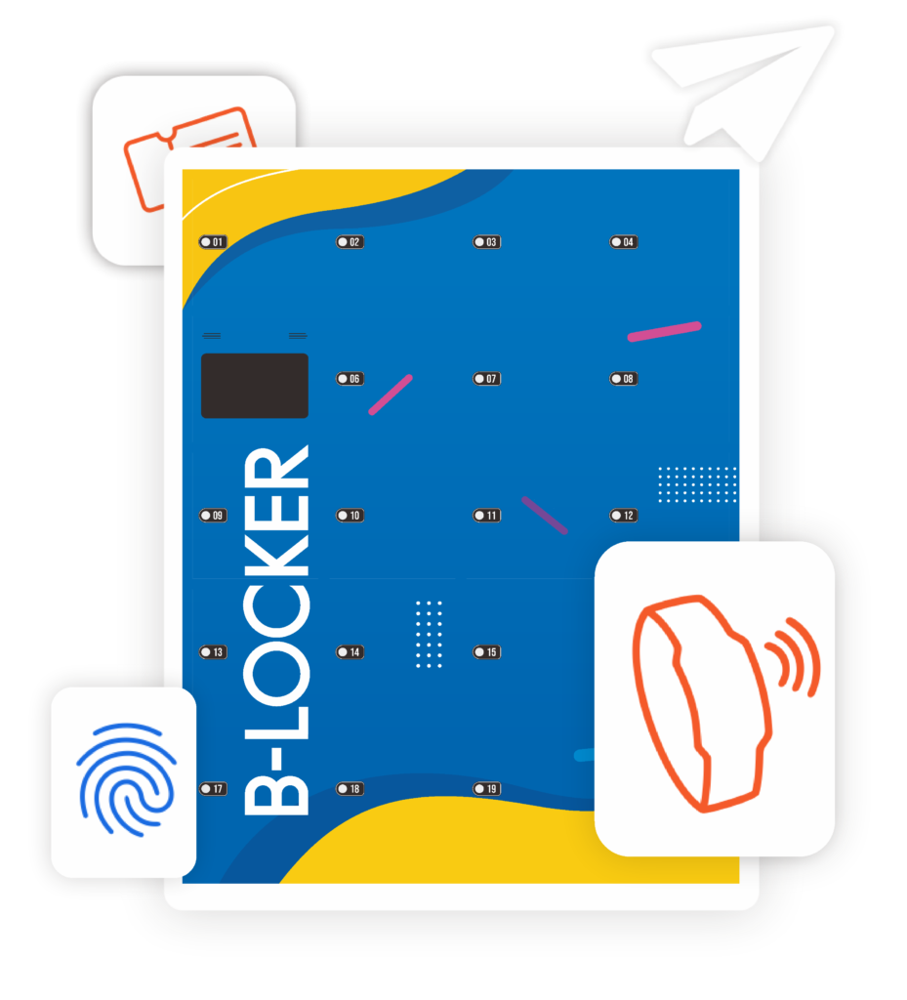

Tingkatkan keamanan dan efisiensi bisnis Anda dengan Smart Locker System. Modular, Scalable, dan Berbasis IoT.

Loker konvensional memakan biaya maintenance tersembunyi dan berisiko tinggi.
Biaya duplikasi kunci dan kerusakan gembok konvensional secara rutin membebani operasional.
Tidak tahu siapa yang menggunakan loker mana. Sulit memberikan atau mencabut akses secara instan.
Mudah dibobol, tidak ada indikator status pintu terbuka, tidak aman untuk aset berharga.
Dari kebutuhan sederhana hingga skala enterprise.
Kebutuhan esensial untuk loker RFID yang sederhana dan efisien.
Cocok untuk: Sekolah, Tempat Penitipan Sederhana, Gym Skala Kecil.
Tanya DetailFeel "Smart System" sesungguhnya dengan manajemen langsung di mesin.
Cocok untuk: Gym Komersial, Kantor, Coworking Space, Workshop/Pabrik.
Penawaran SpesialSistem manajemen sentuh premium dengan arsitektur data terpisah.
Cocok untuk: Perusahaan Besar, Industri, Coworking Premium, Proyek BUMN.
Tanya Detail| Fitur | Basic | Plus | Pro |
|---|---|---|---|
| Akses Utama | RFID Only | RFID + Encoder | RFID + Touchscreen |
| User Interface | TFT LCD | Tablet Android | |
| Manajemen User (CRUD) | Full + Database | ||
| Pemetaan Akses (Mapping) | Fixed (1:1) | Fleksibel | Fleksibel + Roles |
| Modular Expansion | |||
| UPS & Manual Backup |
1 Controller dapat menangani beberapa unit loker sekaligus. Sangat hemat untuk perluasan kapasitas (scalable).
Sistem kelistrikan dilengkapi baterai cadangan. Saat mati lampu, akses loker tetap berfungsi normal sementara waktu.
Logika dan data tersimpan di lokal (controller/tablet). Sistem tetap bekerja 100% tanpa bergantung pada koneksi internet.
Mendukung kustomisasi warna, stiker, dan material untuk menyatu sempurna dengan identitas visual interior bisnis Anda.
Selain UPS, sistem dilengkapi mekanisme Manual Key Override. Jika terjadi kerusakan elektrikal total, administrator tetap dapat membuka pintu secara mekanis (jumper bypass).
Ukuran kabinet luar seragam, Anda tinggal memilih kepadatan jumlah pintu sesuai volume barang pengguna.
Tas kecil / Sepatu
Ransel standar
Tas olahraga / Helm
Garmen / Pakaian gantung